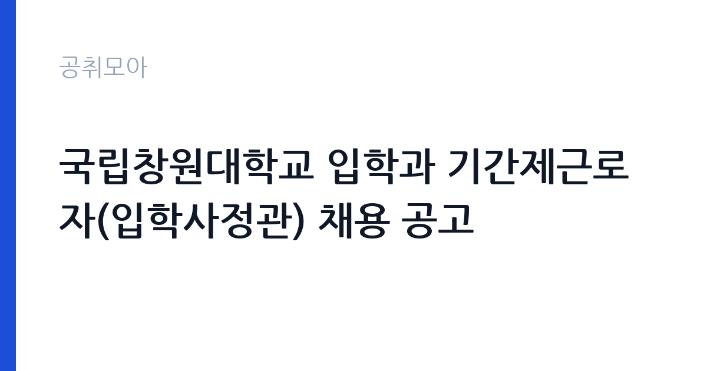

[국가기관] 국립창원대학교 입학과 기간제근로자(입학사정관) 채용 공고
국립창원대학교 · 경남 · 마감 2026-10-12 (D-9) · 출처 나라일터

한눈에 보는 모집 조건
| 기관 | 국립창원대학교 |
|---|---|
| 공고명 | 국립창원대학교 입학과 기간제근로자(입학사정관) 채용 공고 |
| 고용형태 | 기간제 |
| 근무지 | 경남 |
| 게시일 | 2026-10-03 |
| 마감일 | 2026-10-12 (D-9) |
지원자격, 이렇게 읽으세요
- 기간제근로자 1명
- 접수 ~2026-10-12 마감
- 세부 조건은 원문 공고문 확인
입학사정관 채용은 학력과 전공, 입시 관련 실무 경력을 함께 보는 경우가 많습니다. 통상 교육학·통계학·심리학 등 관련 전공자나 고교-대학 연계, 대입 전형 운영 경험자를 우대합니다. 본 공고는 기간제근로자 1명 선발로, 세부 응시자격과 우대사항, 제출서류는 국립창원대학교 원문 공고문에서 반드시 확인하시기 바랍니다. 자격 미달 서류는 접수 단계에서 제외될 수 있습니다.
이 공고의 포인트
국립창원대학교는 2026년 출범한 통합 국립대학으로, 입학처의 전형 설계와 평가 체계가 정비되는 시기입니다. 입학사정관은 수시 학생부종합전형의 서류평가와 면접평가, 고교 방문 입시설명회 등 대입 실무 전반을 담당합니다. 국립대 입시 부서 경력은 이후 타 대학 전임입학사정관 지원 시 경력으로 인정받는 경우가 많아, 교육계 커리어를 계획하시는 분께 실무 이력이 됩니다.
전형은 어떻게 진행되나
통상 서류전형 후 면접전형 순으로 진행됩니다. 서류에서는 학력·경력·관련 자격의 적합성을, 면접에서는 입시 공정성과 평가 역량, 조직 적응력을 확인합니다. 정확한 전형 단계와 배점, 합격자 발표 일정은 원문 공고문을 기준으로 준비하시기 바랍니다.
이런 분께 추천해요
- 대입 전형 운영이나 고교 교육과정 관련 실무 경험이 있는 분
- 교육학·통계학·상담 관련 전공자로 대학 입시 분야 취업을 희망하는 분
- 국립대 근무 경력을 쌓아 교육행정 커리어를 이어가고 싶은 분
지원 전 체크리스트
- 원문 공고문에서 응시자격과 우대조건을 확인했습니다
- 접수 마감일 10월 12일 이전에 서류를 제출할 수 있습니다
- 경력증명서 등 증빙서류의 발급 소요 시간을 계산했습니다
- 근무조건(계약기간·근무시간·보수)을 원문에서 확인했습니다
모집 일정과 제출 타이밍
접수 마감일은 2026년 10월 12일입니다. 서류 합격자 발표와 면접 일정은 원문 공고문과 국립창원대학교 홈페이지 공지사항을 통해 안내됩니다. 마감일 임박 접수는 시스템 오류나 서류 누락의 위험이 있으니, 늦어도 마감 2일 전까지는 접수를 마치시기 바랍니다.
직무 이해하기: 국가기관
입학사정관의 핵심 업무는 학생부종합전형 서류평가와 면접평가입니다. 지원자의 학교생활기록부를 읽고 학업역량·전공적합성·인성 등을 평가기준에 따라 점수화하며, 평가의 공정성과 비밀유지가 생명입니다. 이 밖에 모집요강 작성 보조, 입시설명회 운영, 전형 관련 통계 정리 등 입학과 행정 업무를 함께 수행합니다.
자기소개서 작성 팁
자기소개서에는 막연한 교육열정보다 전형 평가와 연결되는 경험을 쓰시기 바랍니다. 예를 들어 학생 기록을 읽고 판단했던 경험, 다수 지원자를 공정하게 비교했던 경험, 입시 데이터를 정리·분석했던 경험이 설득력이 있습니다. 평가자의 관점에서 공정성과 꼼꼼함을 보여주는 구체적 사례 1개를 중심으로 구성하시기 바랍니다.
면접 준비 포인트
면접에서는 입시 공정성에 대한 가치관과 평가 상황 대처 능력을 묻는 경우가 많습니다. 동점자 처리, 민원 응대, 평가 정보 유출 방지 같은 상황을 제시하고 판단 기준을 확인합니다. 국립창원대학교의 모집단위와 전형 유형(학생부교과·학종·수능 등)을 미리 파악하고, 지원 부서의 최근 입시 결과를 언급하면 준비된 인상을 줄 수 있습니다.
급여·근무조건 읽는 법
본 공고의 보수액은 원문 공고문에서 확인하시기 바랍니다. 참고로 타 국립·사립대학 입학사정관 공고 사례를 보면, 고려대학교 전임입학사정관(기간제)은 학사·석사 기준 연 3,500만 원 내외(제수당 포함, 4대보험·퇴직금 별도), 인천대학교 계약직 초임은 학사 약 3,280만 원, 석사 약 3,415만 원 수준이 제시된 바 있습니다(각 대학 채용공고 기준). 기본급과 수당, 상여의 구성은 대학마다 다르므로, 실수령액은 원문 보수 조건으로 확정하시기 바랍니다.
자주 묻는 질문
- 계약기간과 재계약이 가능한가요?
기간제근로자는 통상 1년 단위로 계약하며, 업무 평가에 따라 재계약하는 구조가 일반적입니다. 정확한 계약기간과 갱신 조건은 원문 공고문에서 확인하시기 바랍니다. - 근무지는 어디인가요?
국립창원대학교 입학과(경남 창원) 근무가 원칙입니다. 통근 가능 여부와 출퇴근 지원 여부는 원문에서 확인하시기 바랍니다. - 정규직 전환이 가능한가요?
기간제근로자는 정규직 전환이 보장되지 않습니다. 다만 국립대 입시 부서 경력은 타 대학 전임입학사정관 채용 지원 시 경력으로 활용할 수 있습니다.
함께 보면 좋은 공고
[국가기관] 2026년 인제경찰서 무기계약(보일러 등 시설관리) 근로자 채용 재공고 — 마감 2026-10-08[국가기관] 보건복지부 아동보호자립과 공무직 채용 일정 변경 공고 — 마감 2026-10-13[국가기관] 2026년 하반기 태백지청 통계조사관(기간제근로자) 채용 공고 — 마감 2026-10-16출처: 나라일터 공개정보를 바탕으로 공취모아가 정리한 안내글입니다. 모집 조건·일정은 변경될 수 있으니 지원 전 반드시 원문 공고문을 확인하세요. 본 글은 정보 제공용이며 합격을 보장하지 않습니다.